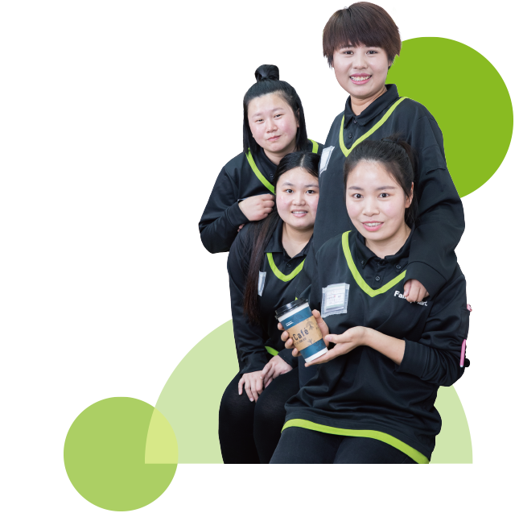

提得起的幸福

1992年出生的翠平鬼点子特别多，葛洲坝门店 有一整块留言墙，各种颜色的小贴纸几乎铺陈满满一墙，有顾客的随笔、留言、涂鸦，最可爱的是与翠平或店员之间的互动。她和员工之间也相处得融洽，“我妈妈来过店里，叫我的小名大盼，员工们听到后也跟着喊大盼，喊我妈妈也叫妈妈，喊我儿子也叫儿子。大家开心就好。”
日商一天天在提高，而租金涨得更厉害，虽然挣得没有别人多，但是翠平很知足，靠自己的劳动还是有得赚。上几个月一天咖啡只能卖60多杯，经过大家的努力，3月份就翻了一倍，所以说肯努力就能见到效果，用翠平的话说就是凡事都不是什么大事，都不难。
“爸爸妈妈辛苦了一辈子，我想挣更多的钱孝顺他们，带他们出去旅游，也让孩子能上更好的学校。以前我很情绪化、很感性，常常会因为别人的一句话、神秘顾客的点评而难过半天，死盯着不放，钻牛角尖。现在就不同了，我会想办法解决，下次一定不再犯错。过去的就让它过去了，我要对家人、对员工负责。”做了妈妈后的翠平成熟了许多。
对翠平来说，除了工作，所有时间都扑在孩子身上了，去哪里都要带着，和员工们的团队建设也变成了家庭聚会。她希望等全家加盟店数封顶后，有朝一日可以加盟德克士，“想归想，不过眼前先做好目前的三家店。自己努力多少就会得到怎样的成绩，这是成正比的。”

关于工作伙伴：将心比心
在我看来，员工在餐厅上班其实都是非常单纯的，多站在他们的角度沟通，了解他们需求，简单归纳就是四个字：将心比心。年轻的员工伙伴对学习新知识获取经验感兴趣，那我就多放权给他们做一些简单的餐厅管理工作，让他们有参与满足感。一些内场的大哥大姐们需要养家糊口，经济压力较大，我就多给班，保证他们的薪资有竞争力。这样自然而然，大家各司其职，管理起来、沟通起来就很顺畅了。
以前我在直营系统，那是一份职业，平时的接人待物都是从上而下执行，没有太多自己的想法。现在内创了，便拥有了自己一份小小的事业，董事长说，当老板者强，我也是在签下离职报告的那一刻起，才愈发体会这句话的深意。有许多创造性的想法，都会不打折扣地用心行动，更何况餐厅近30人的团队要发展，这本身就是一份沉甸甸的责任。在这责任面前，吾将上下而求索。
一家餐厅的氛围，员工伙伴们的工作状态全取决于餐厅的店长，例如在“卡友日，节假日”等需要挑战高日商时，怎样将餐厅伙伴工作状态调整最佳状态是餐厅店长业务水平的最基本体现。